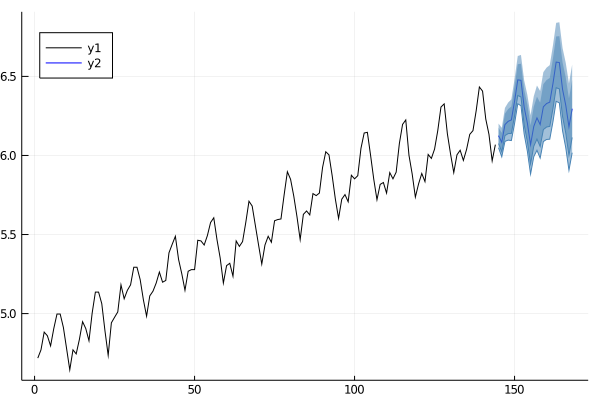
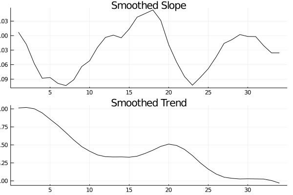

Manual
Quick Start Guide
Although StateSpaceModels.jl has a lot of functionalities, different models and interfaces users usuallly just want to fit a model and analyse the residuals, components and make some forecasts. The following code is a quick start to perform these tasks
import Pkg
Pkg.add("StateSpaceModels")
using StateSpaceModels
y = randn(100)
model = LocalLevel(y)
fit!(model)
results(model)
forec = forecast(model, 10)
kf = kalman_filter(model)
v = get_innovations(kf)
ks = kalman_smoother(model)
alpha = get_smoothed_state(ks)
using Plots
plot(model, forec)
plotdiagnostics(kf)Models
The package provides a variaty of pre-defined models. If there is any model that you wish was in the package, feel free to open an issue or pull request.
StateSpaceModels.UnobservedComponents — TypeUnobservedComponents(
y::Vector{Fl};
trend::String = "local level",
seasonal::String = "no"
cycle::String = "no"
) where FlAn unobserved components model that can have trend/level, seasonal and cycle components. Each component should be specified by strings, if the component is not desired in the model a string with "no" can be passed as keyword argument.
These models take the general form
\[\begin{gather*} \begin{aligned} y_t = \mu_t + \gamma_t + c_t + \varepsilon_t \end{aligned} \end{gather*}\]
where $y_t$ refers to the observation vector at time $t$, $\mu_t$ refers to the trend component, $\gamma_t$ refers to the seasonal component, $c_t$ refers to the cycle, and $\varepsilon_t$ is the irregular. The modeling details of these components are given below.
Trend
The trend component can be modeled in a lot of different ways, usually it is called level when there is no slope component. The modelling options can be expressed as in the example trend = "local level".
- Local Level
string: "local level"
\[\begin{gather*} \begin{aligned} y_{t} &= \mu_{t} + \varepsilon_{t} \quad \varepsilon_{t} \sim \mathcal{N}(0, \sigma^2_{\varepsilon})\\ \mu_{t+1} &= \mu_{t} + \eta_{t} \quad \eta_{t} \sim \mathcal{N}(0, \sigma^2_{\eta})\\ \end{aligned} \end{gather*}\]
- Random Walk
string: "random walk"
\[\begin{gather*} \begin{aligned} y_{t} &= \mu_{t}\\ \mu_{t+1} &= \mu_{t} + \eta_{t} \quad \eta_{t} \sim \mathcal{N}(0, \sigma^2_{\eta})\\ \end{aligned} \end{gather*}\]
- Local Linear Trend
string: "local linear trend"
\[\begin{gather*} \begin{aligned} y_{t} &= \mu_{t} + \gamma_{t} + \varepsilon_{t} \quad &\varepsilon_{t} \sim \mathcal{N}(0, \sigma^2_{\varepsilon})\\ \mu_{t+1} &= \mu_{t} + \nu_{t} + \xi_{t} \quad &\xi_{t} \sim \mathcal{N}(0, \sigma^2_{\xi})\\ \nu_{t+1} &= \nu_{t} + \zeta_{t} \quad &\zeta_{t} \sim \mathcal{N}(0, \sigma^2_{\zeta})\\ \end{aligned} \end{gather*}\]
- Smooth Trend
string: "smooth trend"
\[\begin{gather*} \begin{aligned} y_{t} &= \mu_{t} + \gamma_{t} + \varepsilon_{t} \quad &\varepsilon_{t} \sim \mathcal{N}(0, \sigma^2_{\varepsilon})\\ \mu_{t+1} &= \mu_{t} + \nu_{t}\\ \nu_{t+1} &= \nu_{t} + \zeta_{t} \quad &\zeta_{t} \sim \mathcal{N}(0, \sigma^2_{\zeta})\\ \end{aligned} \end{gather*}\]
Seasonal
The seasonal component is modeled as:
\[\begin{gather*} \begin{aligned} \gamma_t = - \sum_{j=1}^{s-1} \gamma_{t+1-j} + \omega_t \quad \omega_t \sim N(0, \sigma^2_\omega) \end{aligned} \end{gather*}\]
The periodicity (number of seasons) is s, and the defining character is that (without the error term), the seasonal components sum to zero across one complete cycle. The inclusion of an error term allows the seasonal effects to vary over time. The modelling options can be expressed in terms of "deterministic" or "stochastic" and the periodicity as a number in the string, i.e., seasonal = "stochastic 12".
Cycle
The cycle component is modeled as
\[\begin{gather*} \begin{aligned} c_{t+1} &= \rho_c \left(c_{t} \cos(\lambda_c) + c_{t}^{*} \sin(\lambda_c)\right) \quad & \tilde\omega_{t} \sim \mathcal{N}(0, \sigma^2_{\tilde\omega})\\ c_{t+1}^{*} &= \rho_c \left(-c_{t} \sin(\lambda_c) + c_{t}^{*} \sin(\lambda_c)\right) \quad &\tilde\omega^*_{t} \sim \mathcal{N}(0, \sigma^2_{\tilde\omega})\\ \end{aligned} \end{gather*}\]
The cyclical component is intended to capture cyclical effects at time frames much longer than captured by the seasonal component. The parameter $\lambda_c$ is the frequency of the cycle and it is estimated via maximum likelihood. The inclusion of error terms allows the cycle effects to vary over time. The modelling options can be expressed in terms of "deterministic" or "stochastic" and the damping effect as a string, i.e., cycle = "stochastic", cycle = "deterministic" or cycle = "damped".
The UnobservedComponents model has some dedicated Plot Recipes, see Visualization
References
- Durbin, James, & Siem Jan Koopman. (2012). "Time Series Analysis by State Space Methods: Second Edition." Oxford University Press.
StateSpaceModels.SARIMA — TypeSARIMA(y::Vector{Fl}; order::Tuple{Int,Int,Int} = (1, 0, 0),
seasonal_order::Tuple{Int, Int, Int, Int} = (0, 0, 0, 0),
include_mean::Bool = false) where FlA SARIMA model (Seasonal AutoRegressive Integrated Moving Average) implemented within the state-space framework.
The SARIMA model is specified $(p, d, q) \times (P, D, Q, s)$. We can also consider a polynomial $A(t)$ to model a trend, here we only allow to add a constante term with the include_mean keyword argument.
\[\begin{gather*} \begin{aligned} \phi_p (L) \tilde \phi_P (L^s) \Delta^d \Delta_s^D y_t = A(t) + \theta_q (L) \tilde \theta_Q (L^s) \zeta_t \end{aligned} \end{gather*}\]
In terms of a univariate structural model, this can be represented as
\[\begin{gather*} \begin{aligned} y_t & = u_t + \eta_t \\ \phi_p (L) \tilde \phi_P (L^s) \Delta^d \Delta_s^D u_t & = A(t) + \theta_q (L) \tilde \theta_Q (L^s) \zeta_t \end{aligned} \end{gather*}\]
Example
julia> model = SARIMA(rand(100); order=(1,1,1), seasonal_order=(1,2,3,12))
SARIMA(1, 1, 1)x(1, 2, 3, 12) modelSee more on Airline passengers
References
- Durbin, James, & Siem Jan Koopman. (2012). "Time Series Analysis by State Space Methods: Second Edition." Oxford University Press.
StateSpaceModels.BasicStructural — TypeBasicStructural(y::Vector{Fl}, s::Int) where FlThe basic structural state-space model consists of a trend (level + slope) and a seasonal component. It is defined by:
\[\begin{gather*} \begin{aligned} y_{t} &= \mu_{t} + \gamma_{t} + \varepsilon_{t} \quad &\varepsilon_{t} \sim \mathcal{N}(0, \sigma^2_{\varepsilon})\\ \mu_{t+1} &= \mu_{t} + \nu_{t} + \xi_{t} \quad &\xi_{t} \sim \mathcal{N}(0, \sigma^2_{\xi})\\ \nu_{t+1} &= \nu_{t} + \zeta_{t} \quad &\zeta_{t} \sim \mathcal{N}(0, \sigma^2_{\zeta})\\ \gamma_{t+1} &= -\sum_{j=1}^{s-1} \gamma_{t+1-j} + \omega_{t} \quad & \omega_{t} \sim \mathcal{N}(0, \sigma^2_{\omega})\\ \end{aligned} \end{gather*}\]
Example
julia> model = BasicStructural(rand(100), 12)
BasicStructural modelReferences
- Durbin, James, & Siem Jan Koopman. (2012). "Time Series Analysis by State Space Methods: Second Edition." Oxford University Press.
StateSpaceModels.LinearRegression — TypeLinearRegression(X::Matrix{Fl}, y::Vector{Fl}) where FlThe linear regression state-space model is defined by:
\[\begin{gather*} \begin{aligned} y_{t} &= X_{1,t} \cdot \beta_{1,t} + \dots + X_{n,t} \cdot \beta_{n,t} + \varepsilon_{t} \quad &\varepsilon_{t} \sim \mathcal{N}(0, \sigma^2_{\varepsilon})\\ \beta_{1,t+1} &= \beta_{1,t}\\ \dots &= \dots\\ \beta_{n,t+1} &= \beta_{n,t}\\ \end{aligned} \end{gather*}\]
Example
julia> model = LinearRegression(rand(100, 2), rand(100))
LinearRegression modelStateSpaceModels.LocalLevel — TypeLocalLevel(y::Vector{Fl}) where FlThe local level model is defined by:
\[\begin{gather*} \begin{aligned} y_{t} &= \mu_{t} + \varepsilon_{t} \quad \varepsilon_{t} \sim \mathcal{N}(0, \sigma^2_{\varepsilon})\\ \mu_{t+1} &= \mu_{t} + \eta_{t} \quad \eta_{t} \sim \mathcal{N}(0, \sigma^2_{\eta})\\ \end{aligned} \end{gather*}\]
Example
julia> model = LocalLevel(rand(100))
LocalLevel modelSee more on Nile river annual flow
References
- Durbin, James, & Siem Jan Koopman. (2012). "Time Series Analysis by State Space Methods: Second Edition." Oxford University Press. pp. 9
StateSpaceModels.LocalLevelCycle — TypeLocalLevelCycle(y::Vector{Fl}) where FlThe local level model with a cycle component is defined by:
\[\begin{gather*} \begin{aligned} y_{t} &= \mu_{t} + c_{t} + \varepsilon_{t} \quad &\varepsilon_{t} \sim \mathcal{N}(0, \sigma^2_{\varepsilon})\\ \mu_{t+1} &= \mu_{t} + \eta_{t} \quad &\eta_{t} \sim \mathcal{N}(0, \sigma^2_{\eta})\\ c_{t+1} &= c_{t} \cos(\lambda_c) + c_{t}^{*} \sin(\lambda_c)\ \quad & \tilde\omega_{t} \sim \mathcal{N}(0, \sigma^2_{\tilde\omega})\\ c_{t+1}^{*} &= -c_{t} \sin(\lambda_c) + c_{t}^{*} \sin(\lambda_c) \quad &\tilde\omega^*_{t} \sim \mathcal{N}(0, \sigma^2_{\tilde\omega})\\ \end{aligned} \end{gather*}\]
Example
julia> model = LocalLevelCycle(rand(100))
LocalLevelCycle modelSee more on TODO RJ_TEMPERATURE
References
- Durbin, James, & Siem Jan Koopman. (2012). "Time Series Analysis by State Space Methods: Second Edition." Oxford University Press. pp. 48
StateSpaceModels.LocalLevelExplanatory — TypeLocalLevelExplanatory(y::Vector{Fl}, X::Matrix{Fl}) where FlA local level model with explanatory variables is defined by:
\[\begin{gather*} \begin{aligned} y_{t} &= \mu_{t} + X_{1,t} \cdot \beta_{1,t} + \dots + X_{n,t} \cdot \beta_{n,t} + \varepsilon_{t} \quad &\varepsilon_{t} \sim \mathcal{N}(0, \sigma^2_{\varepsilon})\\ \mu_{t+1} &= \mu_{t} + \xi_{t} &\xi_{t} \sim \mathcal{N}(0, \sigma^2_{\xi})\\ \beta_{1,t+1} &= \beta_{1,t} &\tau_{1, t} \sim \mathcal{N}(0, \sigma^2_{\tau_{1}})\\ \dots &= \dots\\ \beta_{n,t+1} &= \beta_{n,t} &\tau_{n, t} \sim \mathcal{N}(0, \sigma^2_{\tau_{n}})\\\\ \end{aligned} \end{gather*}\]
Example
julia> model = LocalLevelExplanatory(rand(100), rand(100, 1))
LocalLevelExplanatory modelStateSpaceModels.LocalLinearTrend — TypeThe linear trend model is defined by:
\[\begin{gather*} \begin{aligned} y_{t} &= \mu_{t} + \gamma_{t} + \varepsilon_{t} \quad &\varepsilon_{t} \sim \mathcal{N}(0, \sigma^2_{\varepsilon})\\ \mu_{t+1} &= \mu_{t} + \nu_{t} + \xi_{t} \quad &\xi_{t} \sim \mathcal{N}(0, \sigma^2_{\xi})\\ \nu_{t+1} &= \nu_{t} + \zeta_{t} \quad &\zeta_{t} \sim \mathcal{N}(0, \sigma^2_{\zeta})\\ \end{aligned} \end{gather*}\]
Example
julia> model = LocalLinearTrend(rand(100))
LocalLinearTrend modelSee more on Finland road traffic fatalities
References
- Durbin, James, & Siem Jan Koopman. (2012). "Time Series Analysis by State Space Methods: Second Edition." Oxford University Press. pp. 44
StateSpaceModels.MultivariateBasicStructural — TypeMultivariateBasicStructural(y::Matrix{Fl}, s::Int) where FlAn implementation of a non-homogeneous seemingly unrelated time series equations for basic structural state-space model consists of trend (local linear trend) and seasonal components. It is defined by:
\[\begin{gather*} \begin{aligned} y_{t} &= \mu_{t} + \gamma_{t} + \varepsilon_{t} \quad &\varepsilon_{t} \sim \mathcal{N}(0, \Sigma_{\varepsilon})\\ \mu_{t+1} &= \mu_{t} + \nu_{t} + \xi_{t} \quad &\xi_{t} \sim \mathcal{N}(0, \Sigma_{\xi})\\ \nu_{t+1} &= \nu_{t} + \zeta_{t} \quad &\zeta_{t} \sim \mathcal{N}(0, \Sigma_{\zeta})\\ \gamma_{t+1} &= -\sum_{j=1}^{s-1} \gamma_{t+1-j} + \omega_{t} \quad & \omega_{t} \sim \mathcal{N}(0, \Sigma_{\omega})\\ \end{aligned} \end{gather*}\]
Example
julia> model = MultivariateBasicStructural(rand(100, 2), 12)
MultivariateBasicStructural modelReferences
- Durbin, James, & Siem Jan Koopman. (2012). "Time Series Analysis by State Space Methods: Second Edition." Oxford University Press.
Implementing a custom model
Users are able to implement any custom user-defined model.
Systems
The StateSpaceModel matrices are represented as a StateSpaceSystem.
StateSpaceModels.StateSpaceSystem — TypeStateSpaceSystemAbstract type that unifies the definition of state space models matrices such as $y, Z, d, T, c, R, H, Q$ for linear models.
StateSpaceModels.LinearUnivariateTimeInvariant — TypeLinearUnivariateTimeInvariant{Fl}(
y::Vector{Fl},
Z::Vector{Fl},
T::Matrix{Fl},
R::Matrix{Fl},
d::Fl,
c::Vector{Fl},
H::Fl,
Q::Matrix{Fl},
) where Fl <: AbstractFloatDefinition of the system matrices $y, Z, d, T, c, R, H, Q$ for linear univariate time invariant state space models.
\[\begin{gather*} \begin{aligned} y_{t} &= Z\alpha_{t} + d + \varepsilon_{t} \quad &\varepsilon_{t} \sim \mathcal{N}(0, H)\\ \alpha_{t+1} &= T\alpha_{t} + c + R\eta_{t} \quad &\eta_{t} \sim \mathcal{N}(0, Q)\\ \end{aligned} \end{gather*}\]
where:
- $y_{t}$ is a scalar
- $Z$ is a $m \times 1$ vector
- $d$ is a scalar
- $T$ is a $m \times m$ matrix
- $c$ is a $m \times 1$ vector
- $R$ is a $m \times r$ matrix
- $H$ is a scalar
- $Q$ is a $r \times r$ matrix
StateSpaceModels.LinearUnivariateTimeVariant — TypeLinearUnivariateTimeVariant{Fl}(
y::Vector{Fl},
Z::Vector{Vector{Fl}},
T::Vector{Matrix{Fl}},
R::Vector{Matrix{Fl}},
d::Vector{Fl},
c::Vector{Vector{Fl}},
H::Vector{Fl},
Q::Vector{Matrix{Fl}},
) where Fl <: AbstractFloatDefinition of the system matrices $y, Z, d, T, c, R, H, Q$ for linear univariate time variant state space models.
\[\begin{gather*} \begin{aligned} y_{t} &= Z_{t}\alpha_{t} + d_{t} + \varepsilon_{t} \quad &\varepsilon_{t} \sim \mathcal{N}(0, H_{t})\\ \alpha_{t+1} &= T_{t}\alpha_{t} + c_{t} + R_{t}\eta_{t} \quad &\eta_{t} \sim \mathcal{N}(0, Q_{t})\\ \end{aligned} \end{gather*}\]
where:
- $y_{t}$ is a scalar
- $Z_{t}$ is a $m \times 1$ vector
- $d_{t}$ is a scalar
- $T_{t}$ is a $m \times m$ matrix
- $c_{t}$ is a $m \times 1$ vector
- $R_{t}$ is a $m \times r$ matrix
- $H_{t}$ is a scalar
- $Q_{t}$ is a $r \times r$ matrix
StateSpaceModels.LinearMultivariateTimeInvariant — TypeTODO
StateSpaceModels.LinearMultivariateTimeVariant — TypeTODO
Hyperparameters
The model hyperparameters are constant (non-time-varying) parameters that are optimized when fit! is called. The package provides some useful functions to accelerate experimentation and custom model development.
The getters are:
StateSpaceModels.get_names — Functionget_names(model::StateSpaceModel)Get the names of the hyperparameters registered on a StateSpaceModel.
StateSpaceModels.number_hyperparameters — Functionnumber_hyperparameters(model::StateSpaceModel)Get the number of hyperparameters registered on a StateSpaceModel.
The setters are:
StateSpaceModels.fix_hyperparameters! — Functionfix_hyperparameters!(model::StateSpaceModel, fixed_hyperparameters::Dict)Fixes the desired hyperparameters so that they are not considered as decision variables in the model estimation.
Example
julia> model = LocalLevel(rand(100))
LocalLevel model
julia> get_names(model)
2-element Array{String,1}:
"sigma2_ε"
"sigma2_η"
julia> fix_hyperparameters!(model, Dict("sigma2_ε" => 100.0))
LocalLevel model
julia> model.hyperparameters.fixed_constrained_values
Dict{String,Float64} with 1 entry:
"sigma2_ε" => 100.0StateSpaceModels.set_initial_hyperparameters! — Functionset_initial_hyperparameters!(model::StateSpaceModel,
initial_hyperparameters::Dict{String, <:Real})Fill a model with user inputed initial points for hyperparameter optimzation.
Example
julia> model = LocalLevel(rand(100))
LocalLevel model
julia> get_names(model)
2-element Array{String,1}:
"sigma2_ε"
"sigma2_η"
julia> set_initial_hyperparameters!(model, Dict("sigma2_η" => 100.0))
LocalLevel model
julia> model.hyperparameters.constrained_values
2-element Array{Float64,1}:
NaN
100.0Mappings:
StateSpaceModels.constrain_variance! — Functionconstrain_variance!(model::StateSpaceModel, str::String)Map a constrained hyperparameter $\psi \in \mathbb{R}^+$ to an unconstrained hyperparameter $\psi_* \in \mathbb{R}$.
The mapping is $\psi = \psi_*^2$
StateSpaceModels.unconstrain_variance! — Functionunconstrain_variance!(model::StateSpaceModel, str::String)Map an unconstrained hyperparameter $\psi_{*} \in \mathbb{R}$ to a constrained hyperparameter $\psi \in \mathbb{R}^+$.
The mapping is $\psi_{*} = \sqrt{\psi}$.
StateSpaceModels.constrain_box! — Functionconstrain_box!(model::StateSpaceModel, str::String, lb::Fl, ub::Fl) where FlMap a constrained hyperparameter $\psi \in [lb, ub]$ to an unconstrained hyperparameter $\psi_* \in \mathbb{R}$.
The mapping is $\psi = lb + \frac{ub - lb}{1 + \exp(-\psi_{*})}$
StateSpaceModels.unconstrain_box! — Functionunconstrain_box!(model::StateSpaceModel, str::String, lb::Fl, ub::Fl) where FlMap an unconstrained hyperparameter $\psi_* \in \mathbb{R}$ to a constrained hyperparameter $\psi \in [lb, ub]$.
The mapping is $\psi_* = -\ln \frac{ub - lb}{\psi - lb} - 1$
StateSpaceModels.constrain_identity! — Functionconstrain_identity!(model::StateSpaceModel, str::String)Map an constrained hyperparameter $\psi \in \mathbb{R}$ to an unconstrained hyperparameter $\psi_* \in \mathbb{R}$. This function is necessary to copy values from a location to another inside HyperParameters
The mapping is $\psi = \psi_*$
StateSpaceModels.unconstrain_identity! — Functionunconstrain_identity!(model::StateSpaceModel, str::String)Map an unconstrained hyperparameter $\psi_* \in \mathbb{R}$ to a constrained hyperparameter $\psi \in \mathbb{R}$. This function is necessary to copy values from a location to another inside HyperParameters
The mapping is $\psi_* = \psi$
Filters and smoothers
StateSpaceModels.jl lets users define tailor-made filters in an easy manner. TODO docs here
StateSpaceModels.UnivariateKalmanFilter — TypeUnivariateKalmanFilter{Fl <: AbstractFloat}A Kalman filter that is tailored to univariate systems, exploiting the fact that the dimension of the observations at any time period is 1.
TODO equations and descriptions of a1 and P1
StateSpaceModels.ScalarKalmanFilter — TypeScalarKalmanFilter{Fl <: Real} <: KalmanFilterSimilar to the univariate Kalman filter but exploits the fact that the dimension of the state is equal to 1.
StateSpaceModels.FilterOutput — TypeFilterOutput{Fl<:Real}Structure with the results of the Kalman filter:
v: innovationsF: variance of innovationsa: predictive stateatt: filtered stateP: variance of predictive statePtt: variance of filtered statePinf: diffuse part of the covariance
StateSpaceModels.get_innovations — Functionget_innovationsReturns the innovations v obtained with the Kalman filter.
StateSpaceModels.get_innovations_variance — Functionget_innovations_varianceReturns the variance F of innovations obtained with the Kalman filter.
StateSpaceModels.get_filtered_state — Functionget_filtered_stateReturns the filtered state att obtained with the Kalman filter.
StateSpaceModels.get_filtered_state_variance — Functionget_filtered_state_varianceReturns the variance Ptt of the filtered state obtained with the Kalman filter.
StateSpaceModels.get_predictive_state — Functionget_predictive_stateReturns the predictive state a obtained with the Kalman filter.
StateSpaceModels.get_predictive_state_variance — Functionget_predictive_state_varianceReturns the variance P of the predictive state obtained with the Kalman filter.
StateSpaceModels.get_smoothed_state — Functionget_smoothed_stateReturns the smoothed state alpha obtained with the smoother.
StateSpaceModels.get_smoothed_state_variance — Functionget_smoothed_state_varianceReturns the variance V of the smoothed state obtained with the smoother.
Fitting and Optimizers
StateSpaceModels.jl has an interface for Optim.jl algorithms. The models can be estimated using different algorithms and tunned to the user needs
StateSpaceModels.fit! — Functionfit!(
model::StateSpaceModel;
filter::KalmanFilter=default_filter(model),
optimizer::Optimizer=Optimizer(Optim.LBFGS())
)Estimate the state-space model parameters via maximum likelihood. The resulting optimal hyperparameters and the corresponding log-likelihood are stored within the model. You can choose the desired filter method (UnivariateKalmanFilter, ScalarKalmanFilter, etc.) and the Optim.jl optimization algortihm.
Example
julia> model = LocalLevel(rand(100))
LocalLevel model
julia> fit!(model)
LocalLevel model
julia> model = LocalLinearTrend(LinRange(1, 100, 100) + rand(100))
LocalLinearTrend model
julia> fit!(model; optimizer = Optimizer(StateSpaceModels.Optim.NelderMead()))
LocalLinearTrend modelStateSpaceModels.Optimizer — TypeOptimizerAn Optim.jl wrapper to make the choice of the optimizer straightforward in StateSpaceModels.jl Users can choose among all suitable Optimizers in Optim.jl using very similar syntax.
Example
julia> using Optim
# use a semicolon to avoid displaying the big log
julia> opt = Optimizer(Optim.LBFGS(), Optim.Options(show_trace = true));StateSpaceModels.results — Functionresults(model::StateSpaceModel)Query the results of the optimization called by fit!.
StateSpaceModels.has_fit_methods — Functionhas_fit_methods(model_type::Type{<:StateSpaceModel}) -> BoolVerify if a certain StateSpaceModel has the necessary methods to perform fit!`.
StateSpaceModels.isfitted — Functionisfitted(model::StateSpaceModel) -> BoolVerify if model is fitted, i.e., returns false if there is at least one NaN entry in the hyperparameters.
Forecasting and simulating
StateSpaceModels.jl has functions to make forecasts of the predictive densities multiple steps ahead and to simulate scenarios based on those forecasts. The package also has a functions to benchmark the model forecasts using backtest techniques.
StateSpaceModels.forecast — Functionforecast(model::StateSpaceModel, steps_ahead::Int; kwargs...)
forecast(model::StateSpaceModel, exogenous::Matrix{Fl}; kwargs...) where FlForecast the mean and covariance for future observations from a StateSpaceModel.
StateSpaceModels.simulate_scenarios — Functionsimulate_scenarios(
model::StateSpaceModel, steps_ahead::Int, n_scenarios::Int;
filter::KalmanFilter=default_filter(model)
) -> Array{<:AbstractFloat, 3}Samples n_scenarios future scenarios via Monte Carlo simulation for steps_ahead using the desired filter.
StateSpaceModels.backtest — Functionbacktest(model::StateSpaceModel, steps_ahead::Int, start_idx::Int;
n_scenarios::Int = 10_000,
filter::KalmanFilter=default_filter(model),
optimizer::Optimizer=default_optimizer(model)) where FlMakes rolling window estimating and forecasting to benchmark the forecasting skill of the model in for different time periods and different lead times. The function returns a struct with the MAE and mean CRPS per lead time. See more on Backtest the forecasts of a model
References
- DTU course "31761 - Renewables in electricity markets" available on youtube https://www.youtube.com/watch?v=Ffo8XilZAZw&t=556s
Visualization
Some user friendly plot recipes are defined using RecipesBase.jl. If you have any suggestions do not hesitate to post it as an issue.
using StateSpaceModels, CSV, DataFrames, Plots
air_passengers = CSV.File(StateSpaceModels.AIR_PASSENGERS) |> DataFrame
log_air_passengers = log.(air_passengers.passengers)
model = BasicStructural(log_air_passengers, 12)
fit!(model)
forec = forecast(model, 24)
plot(model, forec; legend = :topleft)
savefig("plot_forec.png")
nothing/home/runner/.julia/packages/GR/Atztx/src/../deps/gr/bin/gksqt: error while loading shared libraries: libQt5Widgets.so.5: cannot open shared object file: No such file or directory connect: Connection refused GKS: can't connect to GKS socket application GKS: Open failed in routine OPEN_WS GKS: GKS not in proper state. GKS must be either in the state WSOP or WSAC in routine ACTIVATE_WS

using StateSpaceModels, CSV, DataFrames, Plots
finland_fatalities = CSV.File(StateSpaceModels.VEHICLE_FATALITIES) |> DataFrame
log_finland_fatalities = log.(finland_fatalities.ff)
model = UnobservedComponents(log_finland_fatalities; trend = "local linear trend")
fit!(model)
ks = kalman_smoother(model)
plot(model, ks)
savefig("plot_ks.png")
nothing/home/runner/.julia/packages/GR/Atztx/src/../deps/gr/bin/gksqt: error while loading shared libraries: libQt5Widgets.so.5: cannot open shared object file: No such file or directory connect: Connection refused GKS: can't connect to GKS socket application GKS: Open failed in routine OPEN_WS GKS: GKS not in proper state. GKS must be either in the state WSOP or WSAC in routine ACTIVATE_WS

using StateSpaceModels, CSV, DataFrames, Plots
finland_fatalities = CSV.File(StateSpaceModels.NILE) |> DataFrame
model = UnobservedComponents(nile; trend = "local level", cycle = "stochastic")
fit!(model)
kf = kalman_filter(model)
plotdiagnostics(kf)
savefig("plot_diagnostics.png")
nothing
Datasets
The package provides some datasets to illustrate the funtionalities and models. These datasets are stored as csv files and the path to these files can be obtained through their names as seen below. In the examples we illustrate the datasets using DataFrames.jl and CSV.jl
StateSpaceModels.AIR_PASSENGERS — ConstantAIR_PASSENGERSThe absolute path for the AIR_PASSENGERS dataset stored inside StateSpaceModels.jl. This dataset provides monthly totals of a US airline passengers from 1949 to 1960.
See more on Airline passengers
References
- https://www.stata-press.com/data/r12/ts.html
StateSpaceModels.FRONT_REAR_SEAT_KSI — ConstantFRONT_REAR_SEAT_KSIThe absolute path for the FRONT_REAR_SEAT_KSI dataset stored inside StateSpaceModels.jl. This dataset provides the log of british people killed or serious injuried in road accidents accross UK.
References
- Commandeur, Jacques J.F. & Koopman, Siem Jan, 2007. "An Introduction to State Space Time Series Analysis," OUP Catalogue, Oxford University Press (Chapter 3)
- http://staff.feweb.vu.nl/koopman/projects/ckbook/OxCodeAll.zip
StateSpaceModels.INTERNET — ConstantINTERNETThe absolute path for the INTERNET dataset stored inside StateSpaceModels.jl. This dataset provides the number of users logged on to an Internet server each minute over 100 minutes.
References
- Durbin, James, & Siem Jan Koopman. (2012). "Time Series Analysis by State Space Methods: Second Edition." Oxford University Press. (Chapter 9)
StateSpaceModels.NILE — ConstantNILEThe absolute path for the NILE dataset stored inside StateSpaceModels.jl. This dataset provides measurements of the annual flow of the Nile river at Aswan from 1871 to 1970, in $10^8 m^3$.
See more on Nile river annual flow
References
- Durbin, James, & Siem Jan Koopman. (2012). "Time Series Analysis by State Space Methods: Second Edition." Oxford University Press. (Chapter 2)
StateSpaceModels.RJ_TEMPERATURE — ConstantRJ_TEMPERATUREWeekly mean temperature in Rio de Janeiro in Kelvin (K).
StateSpaceModels.VEHICLE_FATALITIES — ConstantVEHICLE_FATALITIESThe absolute path for the VEHICLE_FATALITIES dataset stored inside StateSpaceModels.jl. This dataset provides the number of annual road traffic fatalities in Norway and Finland.
See more on Finland road traffic fatalities
References
- Commandeur, Jacques J.F. & Koopman, Siem Jan, 2007. "An Introduction to State Space Time Series Analysis," OUP Catalogue, Oxford University Press (Chapter 3)
- http://staff.feweb.vu.nl/koopman/projects/ckbook/OxCodeAll.zip
StateSpaceModels.WHOLESALE_PRICE_INDEX — ConstantWHOLESALE_PRICE_INDEXTODO
StateSpaceModels.US_CHANGE — ConstantUS_CHANGEPercentage changes in quarterly personal consumption expenditure, personal disposable income, production, savings and the unemployment rate for the US, 1960 to 2016.
Federal Reserve Bank of St Louis.
References
- Hyndman, Rob J., Athanasopoulos, George. "Forecasting: Principles and Practice"